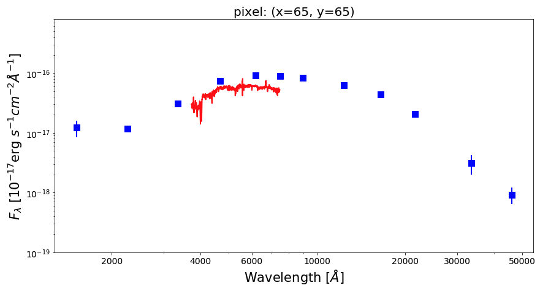
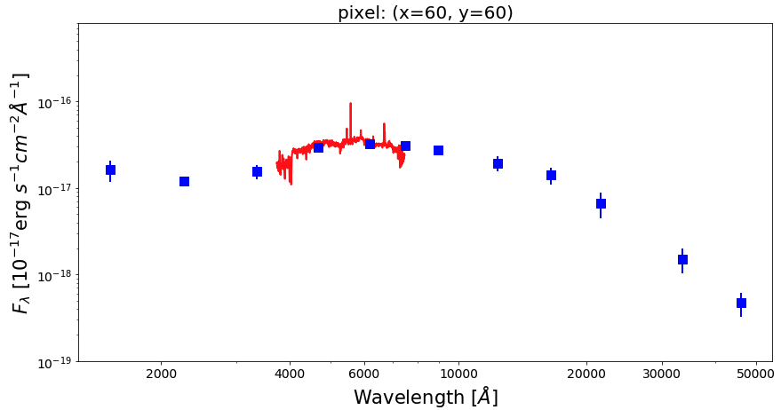
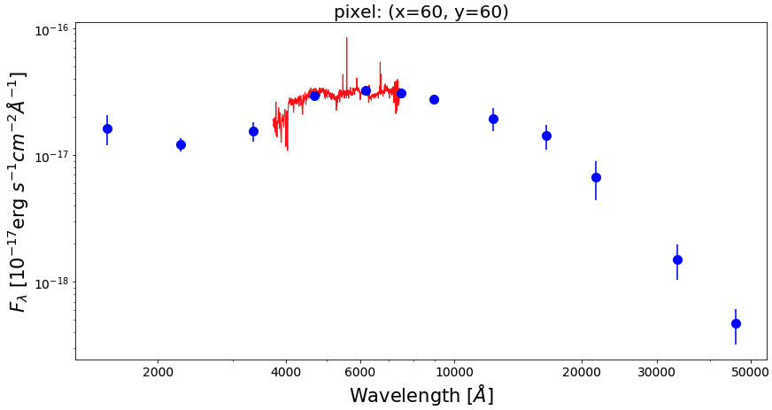
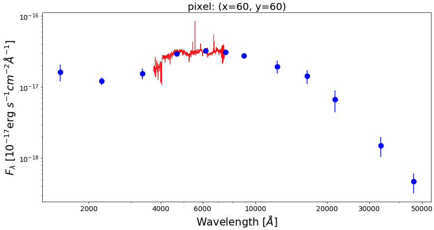
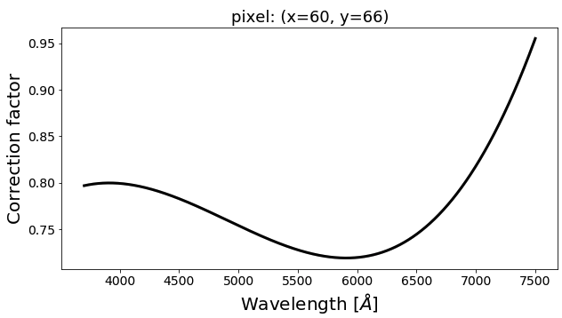
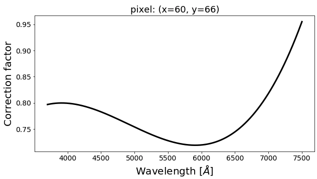

Spatial and Spectral Matching of imaging and IFS data¶
In the analysis of global (i.e., integrated) SED of galaxies, there have been several attemps at combining spectra (at rest-frame optical) and broadband photometry (over a wider wavelength range) into a so-called spectrophotometric SED. One of the great advantages from this combination is the enhancement of the constraining power in the SED fitting given by the high spectral sampling of the optical spectra and the wider wavelength coverage (e.g., FUV to NIR) of the photometric SED. This could help in breaking the existing degeneracies among parameters (especially among age, metallicity, and dust attenuation) in the SED fitting process.
The current abundance of the imaging and IFS (integral field spectroscopy) data (especially for local galaxies) open up new avenues for the analysis of the spatially resolved spectrophotometric SED of galaxies. In this light, piXedfit provides a new feature of matching (in both spatially and spectrally) between imaging and IFS data on pixel level. This kind of data would be very useful for various analyses. One of the power of this data, besides enhancing the constraining power as mentioned above, is the wider spatial coverage of the imaging compared to the IFS observation. The imaging observaitons, especially those that are deep and have high spatial resolution, could cover the extended region of galaxies with a sufficient S/N ratio, thus covering most of the optical region of the galaxies. A module in piXedfit featuring this task is piXedfit_spectrophotometric.
In this brief tutorial, we will combine 12-band imaging data (covering FUV to NIR) and IFS data from the CALIFA survey. The imaging data are the same as we have analyzed in image processing, which are consists of imaging data from the GALEX, SDSS, 2MASS, and WISE. A more detailed tutorial can be seen at FUVtoNIR_CALIFA. This feature is also applicable for IFS data from MaNGA survey. A similar tutorial that uses this IFS data is given at FUVtoNIR_MaNGA.
Spatial matching¶
Overall, there are two steps for combining imaging and IFS data on pixel level. First, spatial matching, which is a matching on the spatial resolution (i.e., PSF size) and sampling (i.e., pixel size). We will do this task here. Second is a matching spectrally, in which we correct for the mismatch between the spectra and photometry along the spectral axis (i.e., wavelength or the 3rd axis). We will perform this task in the next step.
Here we use photometric data cube (fluxmap_ngc309.fits) produced in the image processing and IFS data from CALIFA (NGC0309.COMB.rscube.fits.gz), which is downloaded from
the CALIFA website. The spatial matching can be performed using piXedfit.piXedfit_spectrophotometric.match_imgifs_spatial(). This process will produce spectrophotometric data cube specphoto_fluxmap_ngc309.fits.
import numpy as np from astropy.io import fits import matplotlib.pyplot as plt # call the function from piXedfit.piXedfit_spectrophotometric import match_imgifs_spatial photo_fluxmap = "fluxmap_ngc309.fits" # photometric data cube ifs_data = "NGC0309.COMB.rscube.fits.gz" # IFS data cube ifs_survey = "califa" # IFS data source name_out_fits = "specphoto_fluxmap_ngc309.fits" # name for the output file match_imgifs_spatial(photo_fluxmap, ifs_data, ifs_survey=ifs_survey, name_out_fits=name_out_fits)
Let’s check the result. First, let’s extract the information from the FITS file.
# open the FITS file cube = fits.open("specphoto_fluxmap_ngc309.fits") # get header header = cube[0].header # get photometry and IFS regions photo_region = cube['photo_region'].data spec_region = cube['spec_region'].data # get unit of flux unit = float(header['unit']) # in erg/s/cm2/A # get maps of photometric fluxes map_fluxes = cube['photo_flux'].data # get photometric SEDs of individual pixels # transpose from (band,y,x) to (y,x,band) pix_photo_flux = np.transpose(cube['photo_flux'].data, axes=(1,2,0))*unit pix_photo_flux_err = np.transpose(cube['photo_fluxerr'].data, axes=(1,2,0))*unit # get spectra of individual pixels # transpose from (wave,y,x) to (y,x,wave) pix_spec_flux = np.transpose(cube['spec_flux'].data, axes=(1,2,0))*unit pix_spec_flux_err = np.transpose(cube['spec_fluxerr'].data, axes=(1,2,0))*unit # get wavelength of the spectra spec_wave = cube['wave'].data cube.close()
First, we will plot the coverages of the imaging and IFS data after the matching.
from astropy.visualization import make_lupton_rgb g = map_fluxes[3]*10 # SDSS/g r = map_fluxes[4]*10 # SDSS/r i = map_fluxes[5]*10 # SDSS/i rgb_default = make_lupton_rgb(i, r, g) fig1 = plt.figure(figsize=(5,5)) f1 = plt.subplot() plt.xlabel('[pixel]', fontsize=15) plt.ylabel('[pixel]', fontsize=15) plt.imshow(rgb_default, origin='lower', alpha=1.0) plt.imshow(spec_region, origin='lower', cmap='Greys', alpha=0.2)

Now, we will check SED of some pixels. Before we can plot the SEDs, we need to get the list of filters and their central wavelength.
# get filters from the header nbands = int(header['nfilters']) filters = [] for bb in range(0,nbands): str_temp = 'fil%d' % bb filters.append(header[str_temp]) # get central wavelength of filters from piXedfit.utils.filtering import cwave_filters photo_wave = cwave_filters(filters)
Below we plot SEDs of three example pixels.
 from matplotlib.ticker import ScalarFormatter pix_x = [65, 60, 60] pix_y = [65, 60, 66] nwaves = len(spec_wave) for ii in range(0,3): xx, yy = pix_x[ii], pix_y[ii] photo_SED = pix_photo_flux[yy][xx] photo_SED_err = pix_photo_flux_err[yy][xx] spec_SED = pix_spec_flux[yy][xx] fig1 = plt.figure(figsize=(14,7)) f1 = plt.subplot() plt.title("pixel: (x=%d, y=%d)" % (xx,yy), fontsize=20) f1.set_yscale('log') f1.set_xscale('log') plt.setp(f1.get_yticklabels(), fontsize=14) plt.setp(f1.get_xticklabels(), fontsize=14) plt.xlabel(r'Wavelength $[\AA]$', fontsize=21) plt.ylabel(r'$F_{\lambda}$ [$10^{-17}$erg $s^{-1}cm^{-2}\AA^{-1}$]', fontsize=21) xticks = [2000,4000,6000,10000,20000,30000,50000] plt.xticks(xticks) plt.ylim(1.0e-19,8e-16) for axis in [f1.xaxis]: axis.set_major_formatter(ScalarFormatter()) # Optional: cut the spectra around the edge to exclude those commonly uncertain fluxes plt.plot(spec_wave[20:nwaves-20], spec_SED[20:nwaves-20], lw=2.0, color='red') plt.errorbar(photo_wave, photo_SED, yerr=photo_SED_err, markersize=10, color='blue', fmt='s', lw=2)

Spectral matching¶
As we see in the figures above, there is a missmatch between the spectra and the photometric SEDs. This discrepancy seems to be complex as it shows variations from galaxy to galaxy and the wavelength-variations nature of the discrepancy. Next, we will correct this discrepancy using piXedfit.piXedfit_spectrophotometric.match_imgifs_spectral() function. Basically, this function will perform simple SED fitting to the photometric SED of individual pixels to find a best-fit model spectrum for each pixel. A wavelength-dependent ratio (between the best-fit model spectrum and the IFS spectrum) is then fit with a third-order Legendre polynomial function to get smooth correction factor, which is then applied to correct the IFS spectra.
This calculation is rather heavy and time-consuming, depending on the number of pixels (that have spec+photo SEDs) and the number of cores that are used (nproc) in the calculation. It’s recommended to run this calculation separately (from this jupyter notebook) on a multicores computer (or cluster). The computational time can be shorten by inncreasing the number of cores.
from piXedfit.piXedfit_spectrophotometric import match_imgifs_spectral # spectrophotometric data cube produced in the previous step specphoto_file = "specphoto_fluxmap_ngc309.fits" nproc = 20 # number of cores to be used for calculation name_out_fits = "corr_%s" % specphoto_file # name of output file match_imgifs_spectral(specphoto_file, nproc=nproc, name_out_fits=name_out_fits)
This process will produce spectrophotometric data cube corr_specphoto_fluxmap_ngc309.fits. In the following, we will check this data cube. First, we open the FITS file and extract the data.
# open the FITS file cube = fits.open("corr_specphoto_fluxmap_ngc309.fits") header = cube[0].header wave = cube['wave'].data photo_flux = cube['PHOTO_FLUX'].data photo_flux_err = cube['PHOTO_FLUXERR'].data spec_flux = cube['SPEC_FLUX'].data spec_flux_err = cube['SPEC_FLUXERR'].data # correction factors corr_factor = cube['corr_factor'].data # unit of flux unit = header['unit'] # in erg/s/cm2/A cube.close()
Get SEDs of individual pixels.
# get photometric SEDs of pixels: #transpose (band,y,x) => (y,x,band): pix_photo_SED = np.transpose(photo_flux, axes=(1, 2, 0))*unit pix_photo_SED_err = np.transpose(photo_flux_err, axes=(1, 2, 0))*unit # get spectra: #transpose (wavelength,y,x) => (y,x,wavelength): pix_spec_SED = np.transpose(spec_flux, axes=(1, 2, 0))*unit pix_spec_SED_err = np.transpose(spec_flux_err, axes=(1, 2, 0))*unit pix_corr_factor = np.transpose(corr_factor, axes=(1, 2, 0))
Make plot of the SEDs of the same three pixels that we have shown before, but now after correction has been applied.
nwaves = len(wave) for ii in range(0,3): xx, yy = pix_x[ii], pix_y[ii] fig1 = plt.figure(figsize=(14,7)) f1 = plt.subplot() plt.title("pixel: (x=%d, y=%d)" % (xx,yy), fontsize=20) f1.set_yscale('log') f1.set_xscale('log') plt.setp(f1.get_yticklabels(), fontsize=14) plt.setp(f1.get_xticklabels(), fontsize=14) plt.xlabel(r'Wavelength $[\AA]$', fontsize=21) plt.ylabel(r'$F_{\lambda}$ [$10^{-17}$erg $s^{-1}cm^{-2}\AA^{-1}$]', fontsize=21) xticks = [2000,4000,6000,10000,20000,30000,50000] plt.xticks(xticks) plt.ylim(1.0e-19,8e-16) for axis in [f1.xaxis]: axis.set_major_formatter(ScalarFormatter()) # Optional: cut the spectra around the edge to exclude those commonly uncertain fluxes plt.plot(wave[20:nwaves-20], pix_spec_SED[yy][xx][20:nwaves-20], lw=2.0, color='red') plt.errorbar(photo_wave, pix_photo_SED[yy][xx], yerr=pix_photo_SED_err[yy][xx], markersize=10, color='blue', fmt='s', lw=2)
 


We can see the correction factors that have been applied to the spectra with the following script.
for ii in range(0,3): xx, yy = pix_x[ii], pix_y[ii] fig1 = plt.figure(figsize=(14,7)) f1 = plt.subplot() plt.title("pixel: (x=%d, y=%d)" % (xx,yy), fontsize=20) plt.setp(f1.get_yticklabels(), fontsize=14) plt.setp(f1.get_xticklabels(), fontsize=14) plt.xlabel(r'Wavelength $[\AA]$', fontsize=21) plt.ylabel(r'Correction factor', fontsize=21) plt.plot(wave, pix_corr_factor[yy][xx], lw=3.0, color='black')

 
